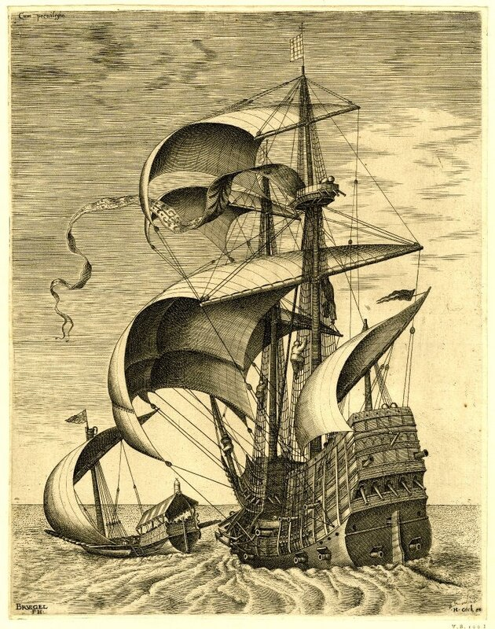

Стремясь ограничить разгорающееся пламя нового конфликта, Генрих II попытался исключить из него испанцев. Он отпустил захваченных бароном де Лагардом испанских моряков без всякого выкупа. Но усилия его оказались напрасными. Наместница Нидерландов при поддержке купцов Антверпена снарядила эскадру для защиты конвоев. Карл V принял сторону Нидерландов и отдал приказ своим адмиралам атаковать французов во всех морях. Бешеный пес морской войны был спущен с цепи. Началась новая война между Валуа и Габсбургами (1551-1559).
Барон де Лагард получает приказ вернуться в Средиземное море. Потребовался его опыт взаимодействия с турками. Генрих II вел дело к возобновлению франко-турецкого альянса, что давало возможность французскому королю проводить политику территориальной экспансии в направлении Рейна, предоставив объединенному франко-османскому флоту защищать Францию с юга. Де Ту пишет: «Турецкий флот под командованием Драгута насчитывал 60 галер, кроме того к ним присоединились 36 французских галер, которые провели зиму на острове Хиос. Командовал ими барон де Лагард. В начале июня 1553 года объединенный франко-турецкий флот подошел к Корсике, право на которую Франция оспаривала у Генуи. Французы намеревались захватить остров, так как обладание им значительно облегчало доставку войск в Тоскану.»
При поддержке турецкого флота в августе-сентябре 1553 г. Франция за 6 недель овладела почти всей Корсикой. Сначала был захвачен Бонифачо. Драгут участвовавший в нападении, уничтожил генуэзский гарнизон и разграбил город. Флотом генуэзцев командовал многоопытный адмирал Андреа Дориа, которому к тому времени исполнилось 87 лет. Осенью 1553 г. Дориа получил поддержку Карла V. Последовал ответный удар генуэзцев, и Франции пришлось оставить крепости Сан-Фьоренцо и Бастию. Де Лагард не смог принять активного участия в зимней военной кампании 1553 г. – его галеры были отведены на зимовку. В следующем 1554 году французы на Корсике лишились турецкой поддержки: Драгут лишь иногда появлялся в западном Средиземноморье, потому что был нужен турецкому султану для войны с Персией. В итоге, несмотря на численное превосходство французских войск над генуэзскими, Франция не смогла удержать остров.
Больше заметных морских событий с участием де Лагарда не было (за одним небольшим исключением – он командовал флотом при осаде Ла-Рошели в период правления Карла IX. Но о Ла-Рошели расскажем как-нибудь в другой раз. Тогда же поговорим и о последних годах жизни Генерала галер барона де Лагарда.